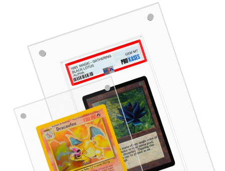

<meta charset="UTF-8">
<meta name="viewport" content="width=device-width, initial-scale=1.0">
<style>
    @import url('https://fonts.cdnfonts.com/css/sf-pro-display?styles=98774,98777,98776,98772,98773,98775,98770,98771,98769');
#pro-acry{
    width: 100%;
    height: 400px;
    padding: 0;
    margin: 0;
    background-color: #f7f7f7;
    font-family: 'SF Pro Display', sans-serif;
    display: flex;
    align-items: center;
    justify-content: space-evenly;
    overflow: clip;
}
#pro-acry h1{
    font-size: 34pt;
    line-height: 24px;
}
#pro-acry .visual-acry{
    position: relative;
}
#pro-acry .ftc, .stc, .ttc {
    position: absolute;
}
#pro-acry .ftc .Acrylique-UV{
position: absolute;
width: 177px;
height: 19px;
left: -42px;
top: -14px;
font-family: 'SF Pro Display';
font-style: normal;
font-weight: 600;
font-size: 16px;
line-height: 19px;
/* identical to box height */
background: linear-gradient(268.09deg, #3927FF -0.76%, #5808E1 46.66%, #F10404 92.77%);
-webkit-background-clip: text;
-webkit-text-fill-color: transparent;
background-clip: text;
color: transparent;
}
#pro-acry .ftc img{
position: absolute;
top: 28px;
left: 60px;
}
#pro-acry .stc .Tailler{
position: absolute;
width: 164px;
height: 19px;
left: 380px;
top: 123px;
font-family: 'SF Pro Display';
font-style: normal;
font-weight: 600;
font-size: 16px;
line-height: 19px;
/* identical to box height */
background: linear-gradient(268.09deg, #3927FF -0.76%, #5808E1 46.66%, #F10404 92.77%);
-webkit-background-clip: text;
-webkit-text-fill-color: transparent;
background-clip: text;
color: transparent;
}
#pro-acry .stc img{
position: absolute;
top: 168px;
left: 348px;
}

#pro-acry .ttc .Protection{
position: absolute;
width: 164px;
height: 19px;
left: -155px;
top: 267px;
font-family: 'SF Pro Display';
font-style: normal;
font-weight: 600;
font-size: 16px;
line-height: 19px;
/* identical to box height */
background: linear-gradient(268.09deg, #3927FF -0.76%, #5808E1 46.66%, #F10404 92.77%);
-webkit-background-clip: text;
-webkit-text-fill-color: transparent;
background-clip: text;
color: transparent;
}
#pro-acry .ttc img{
position: absolute;
top: 226px;
left: -60px;
}

@media screen and (max-width: 600px) {
#pro-acry{
    display: flex;
    height: 80%;
    flex-direction: column-reverse;
    align-items: center;
    justify-content: space-evenly;
    overflow: clip;
}
#pro-acry h1{
    font-size: 26pt;
}
#pro-acry .visual-container{
    position: relative;
    max-width: 98%;
    height: auto;
    padding: 0 4px;
}
#pro-acry .visual-container .visual-img{
width: 288px;
height: 220px;
}

#pro-acry .ftc .Acrylique-UV{
    max-width: 107px;
    height: 80px;
    left: 100px;
    top: -72px;
    text-align: center;
}
#pro-acry .ttc .Protection{
    width: 104px;
    height: 80px;
    left: -25px;
    top: -17px;
}
#pro-acry .stc .Tailler {
    width: 104px;
    height: 80px;
    left: 238px;
    top: 23px;
}

#pro-acry .ftc img{
height: 50px;
top: -5px;
left: 80px;
transform: rotate(100deg);
}
#pro-acry .stc img {
    height: 50px;
    top: 95px;
    left: 208px;
    transform: rotate(-20deg);
}
#pro-acry .ttc img{
    height: 50px;
    top: 78px;
    left: -45px;
    transform: rotate(90deg);
}
}

@media screen and (max-width: 1024px) {
    #pro-acry h1{
    font-size: 24pt;
}
}
</style>
<section id="pro-acry">
<h1>Protection acrylique</h1>
<div class="visual-container">
    <div class="ftc">
        <h2 class="Acrylique-UV">
            Acrylique 99,99 Anti UV
        </h2>
        
    </div>

    <div class="stc">
        <h2 class="Tailler">
            Tailler au Millimètre
        </h2>
        
    </div>

    <div class="ttc">
        <h2 class="Protection">Protection acrylique</h2>
        
    </div>
    
</div>
</section>